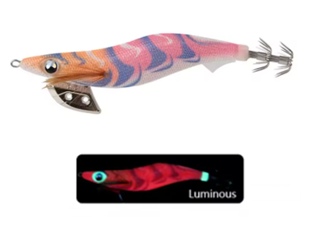

Egis Low Cost
Inicio
Señuelos
YAMASHITA
DTD
YO-ZURI
LETOYO
KINGDOM
SQUID KING
OTROS
Componentes
Color Egis
Acerca de
Letoyo Neon Bright-C – Análisis completo

🎨 Características
Color base:
Rojo intenso con degradados anaranjados y patrones ondulados de alto contraste.
Ojos:
Turquesa brillante, muy visibles y con fuerte efecto de punto de ataque.
Brillo:
Luminiscencia potente que resalta especialmente el cuerpo en tonos cálidos.
Acabado:
Tela textil translúcida que amplifica el efecto glow y el impacto visual.
🌤️ Condiciones ideales de uso
🌙
Noche:
Muy eficaz gracias al contraste rojo + luminiscencia.
🌊
Aguas turbias o tomadas:
El rojo luminoso destaca claramente.
☁️
Días nublados:
Mantiene buena visibilidad incluso sin sol.
🌅
Amanecer / atardecer:
Ideal cuando los calamares están activos.
🪸
Fondos rocosos:
El contraste permite que el egi se diferencie del entorno.
🧠 Comportamiento esperado
👉 Egi de estímulo agresivo, diseñado para provocar ataques rápidos.
👉 Especialmente efectivo con calamares activos o territoriales.
👉 Funciona muy bien cuando los colores naturales no generan respuesta.
👉 Ideal como cambio de patrón cuando otros egis fallan.
⚙️ Resumen práctico
Condición
Eficiencia
☀️🌊 Día soleado / agua clara
🟡 Media
☁️🟥 Día nublado / aguas medias
🟢 Alta
🌙🌑 Noche / aguas oscuras
🟢🟢 Muy alta
🦑😴 Calamares pasivos
🟡 Media
🦑🔥 Calamares agresivos
🟢🟢 Muy alta
🛒 Comprar en AliExpress